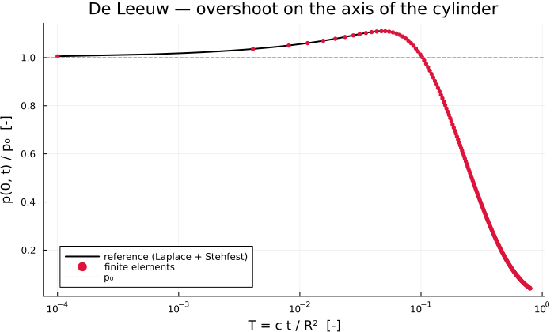
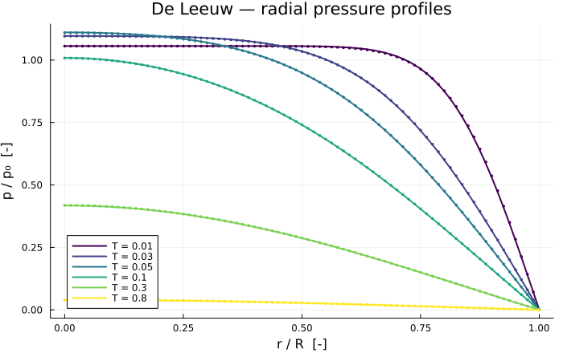

De Leeuw's Problem — Consolidation of a Cylinder
The axisymmetric member of the Mandel–Cryer family: a long saturated cylinder, drained on its lateral surface, compressed radially at $t = 0$. Like the slab and the sphere, the pore pressure at the axis overshoots before decaying (de Leeuw, 1965) — by 11 %, between Mandel's 6.5 % and Cryer's 23 % on the same material.
That ordering is the point of running all three. The overshoot grows with the number of directions in which drainage is constrained, and reproducing the sequence is a far stronger statement about the coupling than reproducing any single case.
This benchmark also exercises the cylindrical kinematics — the coordinate system the Barcelona Basic Model will need for axisymmetry, unlike Cryer's spherical one.
Problem
Cylinder of radius $R$, plane strain along its axis ($\varepsilon_{zz} = 0$). At $t = 0$ a compressive radial traction $P_c$ is applied to the lateral surface, which is held drained.
| Boundary | Condition |
|---|---|
| $r = 0$ | symmetry: $u_r = 0$, no flux |
| $r = R$ | drained $p = 0$, traction $\sigma_{rr} = -P_c$ |
Reference solution
Derived by the same route as Cryer's, from the single-porosity formulation of (Mehrabian and Abousleiman, 2018). The displacement field is again irrotational, so $\varepsilon = c_m p + f(t)$ with the same $c_m = \alpha/M_o$; only the Laplacian and the volume element change.
In cylindrical coordinates the Laplace-space pressure is built on modified Bessel functions rather than hyperbolic sines:
\[\tilde P(r^*, \hat s) = \frac{P_c}{\hat s}\,\frac{\alpha}{2GS}\, \frac{1 - \dfrac{I_0(r^*\sqrt{\hat s})}{I_0(\sqrt{\hat s})}}{D(\hat s)}, \qquad D(\hat s) = \frac{1}{2(1-2\nu)} + \frac{q}{2} - q\,\frac{I_1(\sqrt{\hat s})}{\sqrt{\hat s}\,I_0(\sqrt{\hat s})}\]
with $q = \alpha c_m / S$ and $S = 1/M + \alpha^2/M_o$ as before.
The check that this solution has to pass
The undrained limit is not Skempton's $B P_c$ here, and that is what makes it a genuinely independent test rather than a re-run of Cryer's. Plane strain forbids $\varepsilon_{zz}$, so the axial stress is whatever the constraint requires: $\sigma_{zz} = \nu_u(\sigma_{rr} + \sigma_{\theta\theta}) = -2\nu_u P_c$. The mean stress is therefore $-\tfrac{2}{3}(1+\nu_u)P_c$, and
\[p(r, 0^+) = \frac{2}{3}\,B\,(1 + \nu_u)\,P_c\]
uniform in $r$. The initial value theorem must return exactly that.
include("biot_common.jl")
using SpecialFunctionsModel
The material of Mandel's and Cryer's problems, so the three overshoots are comparable.
const DELEEUW_MATERIAL = HomogeneousBiot(;
E = 1.0e8, nu = 0.2, k = 1.0e-13, mu_l = 1.0e-3, b = 1.0, N = 7.2e-9,
)
const R_CYL = 1.0 # radius [m]
const P_LAT = 1.0e6 # lateral confining traction [Pa]
# `compaction_coefficient` and `storage_coefficient` come from the package.
"""
undrained_pressure(m; Pc)
Initial pore pressure ``p(r,0^+) = \\tfrac{2}{3} B (1+\\nu_u) P_c`` for radial compression
of a cylinder in plane strain.
"""
undrained_pressure(m::HomogeneousBiot; Pc = P_LAT) =
2 * skempton(m) * (1 + undrained_poisson(m)) * Pc / 3Main.undrained_pressureReference solution
besseli overflows for large arguments, so the exponentially scaled besselix is used and the exponential factor restored by hand.
_I0_ratio(a, x) = besselix(0, a * x) / besselix(0, x) * exp((a - 1) * x)
_I1_over_xI0(x) = besselix(1, x) / (x * besselix(0, x))
"""
deleeuw_laplace(m, r, ŝ; Pc)
Pore pressure in Laplace space, `ŝ` conjugate to the dimensionless time `t* = ct/R²`.
"""
function deleeuw_laplace(m::HomogeneousBiot, r, ŝ; Pc = P_LAT)
_, G = lame(m)
S = storage_coefficient(m)
q = m.b * compaction_coefficient(m) / S
x = sqrt(ŝ)
D = 1 / (2 * (1 - 2m.nu)) + q / 2 - q * _I1_over_xI0(x)
return (Pc / ŝ) * (m.b / (2G * S)) * (1 - _I0_ratio(r, x)) / D
end
"""
deleeuw_pressure(m, r, t; Pc) -> p [Pa]
Stehfest inversion of [`deleeuw_laplace`](@ref).
Unlike Cryer's, this transform cannot be evaluated in `BigFloat`: `SpecialFunctions` provides
Bessel functions in `Float64` only. The weights stay in `BigFloat`, which is where the
cancellation actually bites; `Float64` values of the transform are enough, and the agreement
between `N = 10`, `14` and `16` confirms it.
"""
function deleeuw_pressure(m::HomogeneousBiot, r, t; Pc = P_LAT)
t <= 0 && return undrained_pressure(m; Pc = Pc)
return stehfest(ŝ -> deleeuw_laplace(m, r, Float64(ŝ); Pc = Pc), t)
endMain.deleeuw_pressureSolving
The element is radial_element_matrices! with nhoop = 1 — one hoop direction and an $r\,\mathrm{d}r$ weight, against two and $r^2$ for the sphere. That single parameter is the whole difference between the two geometries.
"""
run_deleeuw(; m, nel, T_probe, T_start, dT)
Return `(m, r, T_probe, profiles, T_hist, p_axis)`.
"""
function run_deleeuw(;
m = DELEEUW_MATERIAL,
nel = 80,
T_probe = [0.01, 0.03, 0.05, 0.1, 0.3, 0.8],
T_start = 1.0e-4,
dT = 5.0e-4,
)
c = consolidation_coefficient(m)
t_of_T(T) = T * R_CYL^2 / c
grid = generate_grid(Line, (nel,), Vec(0.0), Vec(R_CYL))
ip = Lagrange{RefLine, 1}()
dh = DofHandler(grid)
add!(dh, :u, ip)
add!(dh, :p, ip)
close!(dh)
qr = QuadratureRule{RefLine}(2)
cv_u = CellValues(qr, ip, ip)
cv_p = CellValues(qr, ip, ip)
ch = ConstraintHandler(dh)
add!(ch, Dirichlet(:u, getfacetset(grid, "left"), (x, t) -> 0.0))
add!(ch, Dirichlet(:p, getfacetset(grid, "right"), (x, t) -> 0.0))
close!(ch)
update!(ch, 0.0)
n_loc = ndofs_per_cell(dh)
K1 = allocate_matrix(dh)
K2 = allocate_matrix(dh)
A = allocate_matrix(dh)
as1 = start_assemble(K1)
as2 = start_assemble(K2)
ke1 = zeros(n_loc, n_loc)
ke2 = zeros(n_loc, n_loc)
for cell in CellIterator(dh)
reinit!(cv_u, cell)
reinit!(cv_p, cell)
radial_element_matrices!(ke1, ke2, m, cv_u, cv_p, getcoordinates(cell); nhoop = 1)
assemble!(as1, celldofs(cell), ke1)
assemble!(as2, celldofs(cell), ke2)
end
u_dof = zeros(Int, getnnodes(grid))
p_dof = zeros(Int, getnnodes(grid))
u_range = dof_range(dh, :u)
p_range = dof_range(dh, :p)
for cell in CellIterator(dh)
d = celldofs(cell)
for (loc, node) in enumerate(cell.nodes)
u_dof[node] = d[u_range[loc]]
p_dof[node] = d[p_range[loc]]
end
end
# Boundary term of the weak form, δu σ_rr r, evaluated at r = R.
coords = [node.x[1] for node in grid.nodes]
surface_node = argmax(coords)
f_ext = zeros(ndofs(dh))
f_ext[u_dof[surface_node]] = -P_LAT * R_CYL
schedule = uniform_schedule(T_probe; T_start = T_start, dT = dT)
x = zeros(ndofs(dh))
apply!(x, ch)
profiles = Vector{Vector{Float64}}()
probes_left = sort(T_probe)
T_hist = Float64[]
p_axis = Float64[]
axis_node = argmin(coords)
t_prev = 0.0
for T in schedule
t = t_of_T(T)
dt = t - t_prev
combine!(A, K1, K2, 1.0 / dt)
rhs = copy(f_ext)
mul!(rhs, K2, x, 1.0 / dt, 1.0)
apply!(A, rhs, ch)
x = A \ rhs
t_prev = t
push!(T_hist, T)
push!(p_axis, x[p_dof[axis_node]])
if !isempty(probes_left) && isapprox(T, probes_left[1]; rtol = 1.0e-9)
push!(profiles, [x[p_dof[i]] for i in 1:getnnodes(grid)])
popfirst!(probes_left)
end
end
return m, coords, sort(T_probe), profiles, T_hist, p_axis
end
model, rr, T_probe, p_num, T_hist, p_axis = run_deleeuw()(BiotPoroelastic{Float64}(1.0e8, 0.2, 1.0e-13, 0.001, 1.0, 7.2e-9), [0.0, 0.012500000000000011, 0.025000000000000022, 0.03749999999999998, 0.04999999999999999, 0.0625, 0.07500000000000001, 0.08750000000000002, 0.09999999999999998, 0.11249999999999999 … 0.8875, 0.9, 0.9125, 0.925, 0.9375, 0.95, 0.9625, 0.975, 0.9875, 1.0], [0.01, 0.03, 0.05, 0.1, 0.3, 0.8], [[703939.2930085016, 703939.292599533, 703939.2916046139, 703939.289864063, 703939.2871881985, 703939.2832944975, 703939.2777735324, 703939.2700444828, 703939.2592933474, 703939.2443872312 … 394484.5657191685, 357330.9653305416, 317903.5513448533, 276397.2821895019, 233054.611063036, 188161.82298479942, 142043.57794848565, 95055.81559519532, 47577.278464042116, 0.0], [730658.5572339188, 730653.1053433795, 730640.272604045, 730619.0532912095, 730588.8906760697, 730549.111202656, 730498.8633597099, 730437.0929957486, 730362.5237070807, 730273.6366720294 … 237641.9650594876, 212127.11263891685, 186237.21977892917, 160034.62842335075, 133584.2127006956, 106952.89851280177, 80209.15546468535, 53422.46767968016, 26662.790455646747, 0.0], [739862.4703388235, 739815.6382108205, 739706.0577587244, 739526.7262780232, 739275.5325568693, 738950.4845248489, 738549.2724510827, 738069.1659887661, 737506.9780779459, 736859.0485509345 … 182430.5207984178, 162363.5154951022, 142173.8298278094, 121891.73982459176, 101548.02472675448, 81173.82921627043, 60800.522652565174, 40459.55640678392, 20182.320404667957, 0.0], [672268.0772552554, 672126.884830914, 671797.3547994897, 671260.4609478798, 670513.193388042, 669554.2138820571, 668382.5543596921, 666997.3197361495, 665397.5923479714, 663582.3963082115 … 122215.49699227871, 108542.7344688163, 94868.26187458978, 81202.81033430534, 67557.12935831581, 53941.96459694201, 40368.03555873937, 26846.013381224177, 13386.498742306752, 0.0], [278968.75475964346, 278890.60780964146, 278708.3055286813, 278411.52906151494, 277998.95164560026, 277470.30158620735, 276825.6407804784, 276065.1981654506, 275189.3140878012, 274198.4172602682 … 44733.323073824555, 39698.01759285393, 34672.987305275274, 29660.808937272326, 24664.045471108424, 19685.24459778254, 14726.937181013274, 9791.63573370839, 4881.83290799975, 0.0], [26807.83520743735, 26800.312061035387, 26782.76200784086, 26754.19177438752, 26714.473817996924, 26663.582236778064, 26601.523312972244, 26528.319477864483, 26444.003954654796, 26348.61853808526 … 4294.696476149009, 3811.2510189281775, 3328.800071186589, 2847.5900172175257, 2367.865908431837, 1889.8713194271108, 1413.8482051603014, 940.0367592943367, 468.67527381241035, 0.0]], [0.0001, 0.0006000000000000001, 0.0011, 0.0016, 0.0021, 0.0026, 0.0031, 0.0036, 0.0041, 0.0046 … 0.7956, 0.7961, 0.7966, 0.7971, 0.7976, 0.7981, 0.7986, 0.7991, 0.7996, 0.8], [670085.3730885297, 675168.6141147577, 678526.5581749267, 681170.5025966449, 683413.4970072815, 685393.5547188757, 687184.7607973581, 688832.0519099255, 690365.0312459439, 691804.3936992491 … 27366.27680127366, 27302.237513206863, 27238.34808217814, 27174.608157581217, 27111.01738948958, 27047.575428937635, 26984.281927627522, 26921.136538211296, 26858.138914074938, 26807.83520743735])Results
using Plots
p0 = undrained_pressure(model)
@printf("Skempton B : %.6f\n", skempton(model))
@printf("Undrained ν_u : %.6f\n", undrained_poisson(model))
@printf("p₀ = (2/3)B(1+ν_u)Pc: %.4e Pa (Cryer's sphere would give B·Pc = %.4e Pa)\n",
p0, skempton(model) * P_LAT)
println()Skempton B : 0.714286
Undrained ν_u : 0.400000
p₀ = (2/3)B(1+ν_u)Pc: 6.6667e+05 Pa (Cryer's sphere would give B·Pc = 7.1429e+05 Pa)The reference, checked before use
@printf("p(r,t→0)/P_c at r* = 0.1, 0.5, 0.9 : %.6f %.6f %.6f (expected %.6f)\n",
deleeuw_pressure(model, 0.1, 1.0e-6) / P_LAT,
deleeuw_pressure(model, 0.5, 1.0e-6) / P_LAT,
deleeuw_pressure(model, 0.9, 1.0e-6) / P_LAT, p0 / P_LAT)
@printf("p at the drained surface, t* = 0.1 : %.3e Pa\n", deleeuw_pressure(model, 0.999999, 0.1))
println()p(r,t→0)/P_c at r* = 0.1, 0.5, 0.9 : 0.667043 0.667043 0.667043 (expected 0.666667)
p at the drained surface, t* = 0.1 : 9.412e-01 PaThe overshoot, and where it sits between slab and sphere
p_ref_axis = [deleeuw_pressure(model, 1.0e-8, T) for T in T_hist]
i_num = argmax(p_axis)
i_ref = argmax(p_ref_axis)
@printf("numerical peak : p/p₀ = %.5f at T = %.4f\n", p_axis[i_num] / p0, T_hist[i_num])
@printf("reference peak : p/p₀ = %.5f at T = %.4f\n", p_ref_axis[i_ref] / p0, T_hist[i_ref])
@printf("overshoot : %.1f %% (Mandel slab 6.5 %%, Cryer sphere 22.9 %%)\n",
100 * (p_ref_axis[i_ref] / p0 - 1))
println()
plt_hist = plot(
T_hist, p_ref_axis ./ p0;
xlabel = "T = c t / R² [-]", ylabel = "p(0, t) / p₀ [-]",
title = "De Leeuw — overshoot on the axis of the cylinder",
label = "reference (Laplace + Stehfest)", lw = 2, color = :black,
xscale = :log10, legend = :bottomleft, size = (700, 420),
)
plot!(
plt_hist, T_hist[1:8:end], (p_axis ./ p0)[1:8:end];
seriestype = :scatter, ms = 3, mswidth = 0, color = :crimson, label = "finite elements",
)
hline!(plt_hist, [1.0]; ls = :dash, color = :grey, label = "p₀")
plt_hist
Error against the reference
println(" T | L2 error | L∞ error [Pa]")
println("-"^44)
errors = Float64[]
for (T, pn) in zip(T_probe, p_num)
ref = [deleeuw_pressure(model, max(r / R_CYL, 1.0e-8), T) for r in rr]
e2 = norm(pn .- ref) / norm(ref)
push!(errors, e2)
@printf(" %8.4f | %.3e | %10.1f\n", T, e2, maximum(abs.(pn .- ref)))
end
println("-"^44)
@printf("worst relative L2 error: %.3e\n", maximum(errors)) T | L2 error | L∞ error [Pa]
--------------------------------------------
0.0100 | 2.552e-03 | 4552.2
0.0300 | 1.305e-03 | 1565.1
0.0500 | 1.095e-03 | 956.3
0.1000 | 6.380e-04 | 480.8
0.3000 | 1.689e-03 | 523.5
0.8000 | 4.475e-03 | 121.4
--------------------------------------------
worst relative L2 error: 4.475e-03Convergence
function worst_error(; nel, dT)
mm, rrr, Tp, pn, _, _ = run_deleeuw(; nel = nel, dT = dT)
return maximum(
let ref = [deleeuw_pressure(mm, max(r / R_CYL, 1.0e-8), T) for r in rrr]
norm(p .- ref) / norm(ref)
end for (T, p) in zip(Tp, pn)
)
end
println(" ΔT | worst L2 error | ratio")
println("-"^42)
prev = NaN
for dT in (4.0e-3, 2.0e-3, 1.0e-3, 5.0e-4)
e = worst_error(; nel = 80, dT = dT)
@printf(" %.2e | %.3e | %s\n", dT, e, isnan(prev) ? "—" : @sprintf("%.2f", prev / e))
global prev = e
end ΔT | worst L2 error | ratio
------------------------------------------
4.00e-03 | 3.517e-02 | —
2.00e-03 | 1.770e-02 | 1.99
1.00e-03 | 8.878e-03 | 1.99
5.00e-04 | 4.475e-03 | 1.98Radial profiles
plt = plot(;
xlabel = "r / R [-]", ylabel = "p / p₀ [-]",
title = "De Leeuw — radial pressure profiles",
legend = :bottomleft, size = (700, 440),
)
rfine = range(0.001, 0.999; length = 200)
palette = cgrad(:viridis, max(length(T_probe), 2); categorical = true)
for (i, (T, pn)) in enumerate(zip(T_probe, p_num))
plot!(
plt, rfine, [deleeuw_pressure(model, r, T) / p0 for r in rfine];
color = palette[i], lw = 2, label = "T = $T",
)
plot!(
plt, rr ./ R_CYL, pn ./ p0;
color = palette[i], seriestype = :scatter, ms = 2, mswidth = 0, label = "",
)
end
plt
Notes
- A different undrained limit is what makes this an independent check rather than a rerun of Cryer's. Plane strain gives $\tfrac{2}{3}B(1+\nu_u)P_c$, not $BP_c$, and the initial value theorem returns it on materials with very different couplings.
- One parameter separates the geometries. The same
radial_element_matrices!serves both, withnhoop = 1here and2for the sphere. - Bessel functions force
Float64for the transform, unlike Cryer's elementary one. Only the Stehfest weights needBigFloat, andN = 10,14,16agree to five digits.